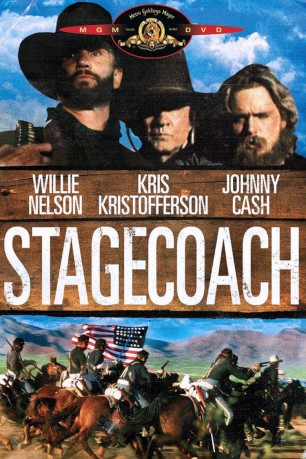

#1357 Stagecoach - Höllenfahrt nach Lordsburg
Alternativ: Stagecoach
 
 IMDB-Wertung: 5.9 / 10
IMDB-Wertung: 5.9 / 10  Metascore: 0
Metascore: 0 
Story follows a stagecoach ride through Old West Apache territory. On board are a cavalry man's pregnant wife, a prostitute with a broken heart, a Marshal taking in his prisoner Johnny Ringo, a crooked gambler, and the infamous Doc Holliday.
Jahr: 1986
Dauer: 100 Minuten
FSK: 12
Land: USA Studio: CBSTonspuren:
Untertitel:
Auflösung: 720p (1280x712) Größe: 2273 MB
Genre: Action, Drama, Western
Regisseur: Ted Post
Drehbuch: James Lee Barrett, Ernest Haycox, Dudley Nichols
Soundtrack: David Allan Coe, Willie Nelson
Darsteller:
 Willie Nelson als Doc Holliday
Willie Nelson als Doc Holliday Kris Kristofferson als Ringo / Ringo Kid / Bill Williams
Kris Kristofferson als Ringo / Ringo Kid / Bill Williams- Johnny Cash als Marshal Curly Wilcox
 John Schneider als Buck, Overland Stage Driver
John Schneider als Buck, Overland Stage Driver Elizabeth Ashley als Dallas
Elizabeth Ashley als Dallas- Anthony Newley als Trevor Peacock, Old John's Whiskey Salesman
 Anthony Franciosa als Henry Gatewood, Tonto Banker
Anthony Franciosa als Henry Gatewood, Tonto Banker- Merritt Butrick als Lieutenant Blanchard
- Mary Crosby als Mrs. Lucy Mallory
- June Carter Cash als Mrs. Pickett
- Bob Mclean als Chris
- John Carter Cash als Billy Pickett
- Anthony Russell als Overland Stage Ticket Clerk
 Joe Unger als Captain Sickels
Joe Unger als Captain Sickels- Ed Adams als White Scout
 Sonny Carl Davis als Corporal
Sonny Carl Davis als Corporal- Waylon Jennings als Hatfield, Gambler
- Jessi Colter als Martha
- Alex Kubik als Luke Plummer
- David Allan Coe als Ike Plummer
- Lash La Rue als Lash
- Michael Haynes als Captain John Mallory
- Kal Roberts als Hank Plummer
- Billy Swan als Tonto Bartender
- Glen Clark als Walt, Shotgun Guard Who Quits
- Tim Gilbert als Town Character
- Dave Adams als Lordsburg Bartender
- Norman Stone als Man #1
- Jack Dunlap als Man #2
- Robert Cota als Indian Scout
Datei: X:\HD-Western-1980-1999\Stagecoach - Höllenfahrt nach Lordsburg (1986, FSK12, 1280x712).mkv seit 26.06.2015
Festplatte: HD Eastern+Western
 Es gibt insgesamt 29 Filme in der Gruppe 'HD-Western-1980-1999'
Es gibt insgesamt 29 Filme in der Gruppe 'HD-Western-1980-1999'